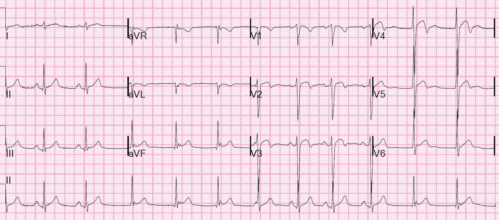
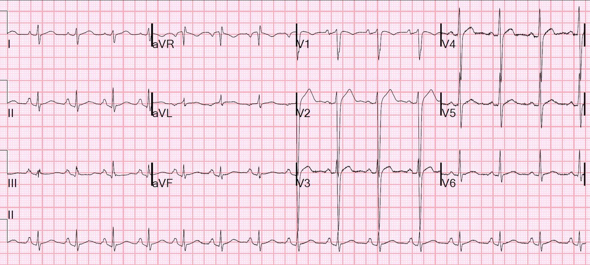
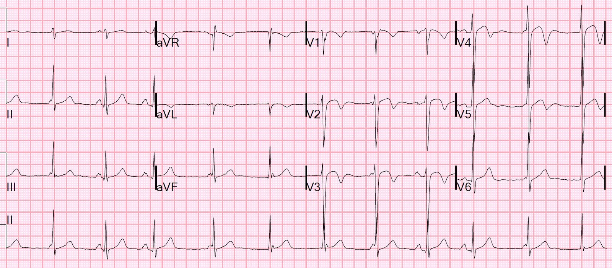
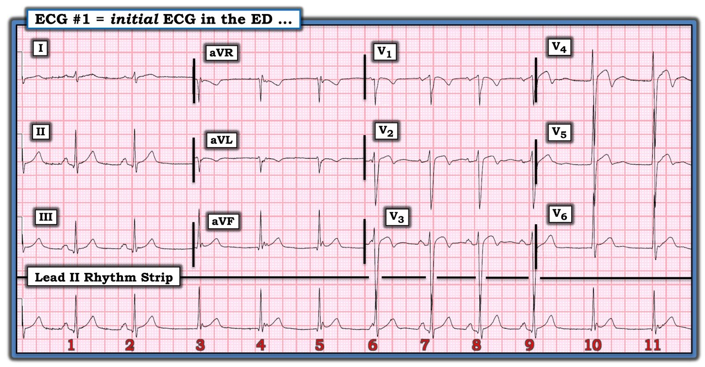
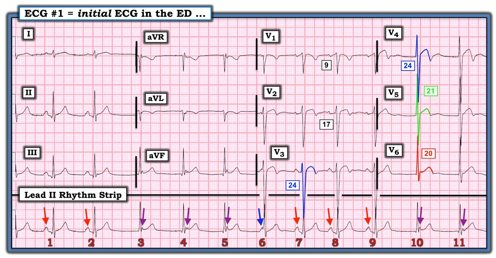
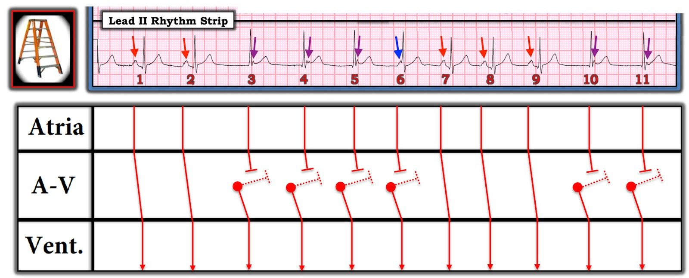
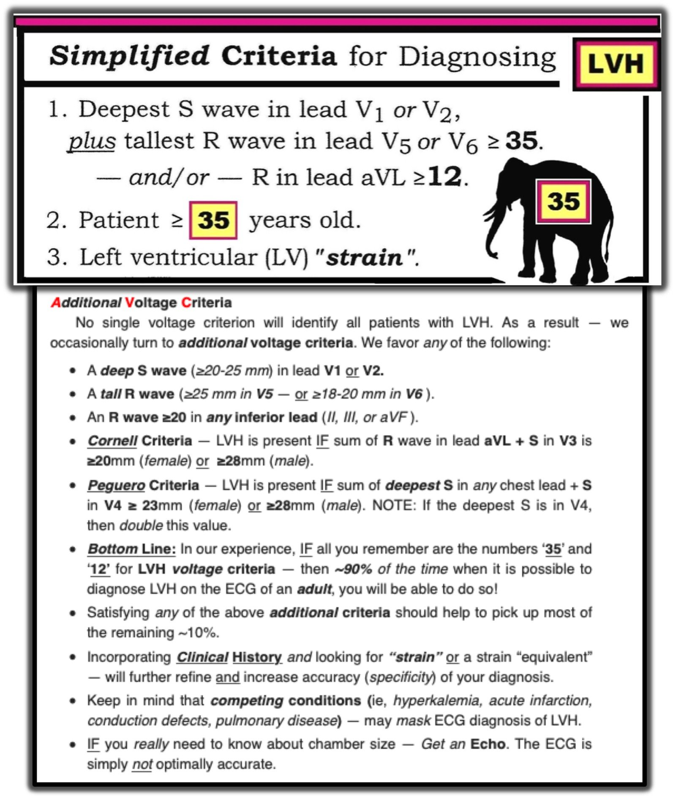

09/10/2020 — Không phải mọi sóng T đảo ngược mới xuất hiện đều có nghĩa là thiếu máu cục bộ. Ngoài ra, nhịp không đều này là gì?
Bản dịch tiếng Việt của bài "Not all new T-wave inversion signifies ischemia. Also, what is this irregular rhythm?" – Dr. Smith’s ECG Blog. Giữ nguyên toàn bộ 9 hình ảnh của bản gốc.
Điện tâm đồ này được nhắn tin cho tôi kèm câu hỏi “Wellens?”


Kết quả đọc bằng máy tính là:
Rung nhĩ, ST chênh lên rõ rệt. ***Nhồi máu cơ tim cấp***
Khoảng QT ngắn (377 ms, QTc = 399 ms)
Đây KHÔNG phải là rung nhĩ:
Có loạn nhịp xoang kèm nhịp bộ nối gia tốc cạnh tranh với nút xoang và gây ra một phần phân ly nhĩ thất (không có blốc AV!).
Điều này hoàn toàn lành tính.
Tôi trả lời: ST chênh lên kèm sóng T đảo ngược này trông giống một biến thể bình thường ở người Mỹ gốc Phi. Tôi sẽ kiểm tra troponin, nhưng tôi không nghĩ đây là bệnh lý.
Đây là bệnh sử: Bệnh nhân đang bị bắt giữ vì tàng trữ methamphetamine, ngủ gà, và khi được đánh thức thì xác nhận có đau ngực đang diễn ra.
Rồi anh ấy viết: “Đây là những thay đổi mới so với 4 tháng trước.”
Tôi vào hồ sơ bệnh án để tìm điện tâm đồ trước đó:


QT = 365 ms, QTc = 409 ms
Thứ nhất: nếu không có triệu chứng của ACS thì không thể là hội chứng Wellens. Khó nói bệnh nhân này có triệu chứng hay không. Wellens là một hội chứng, không phải một dấu hiệu trên điện tâm đồ, và nó đòi hỏi phải có cơn đau thắt ngực đã hết vào thời điểm ghi điện tâm đồ, sóng T đảo ngược điển hình và sóng R được bảo tồn. Dương tính giả rất thường gặp khi điện thế QRS cao (như ở đây).
Điện tâm đồ trước đó này cho thấy ST chênh lên lành tính điển hình ở các chuyển đạo V2-V4 (giả STEMI thành trước) và điện thế QRS lớn. Tuy nhiên, mức ST chênh lên này là điển hình với mức điện thế như vậy. Nếu áp dụng công thức 4 biến cho điện tâm đồ này, bạn sẽ được giá trị 14.74, cực kỳ thấp và cực kỳ ít khả năng là do tắc LAD.
Khoảng QT ngắn này là một manh mối quan trọng cho thấy đây không phải Wellens, vốn hầu như luôn có QT trên 400 ms.
Không hiếm gặp những điện tâm đồ như thế này có sóng T đảo ngược mới xuất hiện nhưng lành tính. Phải kiểm tra troponin, nhưng nếu troponin âm tính thì đây không phải là một điện tâm đồ nguy cơ cao cần thúc đẩy thăm dò thêm bất chấp troponin âm tính. Điều này đặc biệt đúng khi không có triệu chứng điển hình của ACS.
Câu trả lời của tôi là: Tôi thấy anh đã đo troponin 3 lần và tất cả đều thực sự âm tính.
[Đây là troponin I độ nhạy cao, của Abbott, và mọi giá trị đều là 5 ng/L (rất thấp, không có bất kỳ biến thiên (delta) nào)]. Điều đó gần như chứng minh rằng đây không phải là điện tâm đồ thiếu máu cục bộ. Đơn giản đó là một thực tế: sóng T đảo ngược mới xuất hiện có thể là bình thường.
Cuối cùng, việc bệnh nhân này dường như có đau ngực đang diễn ra là bằng chứng rất mạnh chống lại Wellens. Tuy nhiên, điều này có thể rất dễ gây nhầm lẫn vì đau thắt ngực không ổn định có thể có sóng T đảo ngược đang diễn ra trong lúc đau và hết đi khi hết đau. (Khác biệt lớn là sóng T trở về bình thường khi hết đau. Với Wellens, nếu đau tái phát và sóng T trở về bình thường, thì động mạch đang tắc lại!)
Xem một số ví dụ về sóng T đảo ngược do đau thắt ngực không ổn định tại đây:
Dynamic, Reversible, Ischemic T-wave inversion mimics Wellens’. All trops negative. (Sóng T đảo ngược do thiếu máu cục bộ, động và hồi phục được, giả Wellens. Mọi giá trị troponin đều âm tính.)
Anh ấy đã ghi điện tâm đồ thứ 2:


Bản ghi này cho thấy loạn nhịp xoang còn rõ rệt hơn nữa và lại có nhịp bộ nối gia tốc, gây ra phân ly nhĩ thất (một lần nữa, không có blốc AV!)
Tôi đoán anh ấy chưa bị thuyết phục, nên đã cho bệnh nhân nhập viện.
Siêu âm tim chính thức đã được thực hiện và kết quả bình thường.
Mọi giá trị troponin I độ nhạy cao đều = 5 ng/L.
Điểm cần học
Một thực tế là sóng T đảo ngược mới xuất hiện có thể bình thường và nguyên nhân không phải lúc nào cũng rõ ràng. Cần rất nhiều kinh nghiệm nhận diện hình ảnh để biết đâu là lành tính và đâu thì không. Điều đặc biệt đúng là khi điện thế QRS lớn, thường có sóng T đảo ngược giả Wellens
Pseudo-Wellens’ Syndrome due to Left Ventricular Hypertrophy (LVH) (Hội chứng giả Wellens do phì đại thất trái (LVH))
2 Cases of Resolved Chest Pain with Dynamic Terminal T-wave Inversion (Hai ca đau ngực đã hết kèm sóng T đảo ngược phần cuối có tính động)
Dynamic, Reversible, Ischemic T-wave inversion mimics Wellens’. All trops negative. (Sóng T đảo ngược do thiếu máu cục bộ, động và hồi phục được, giả Wellens. Mọi giá trị troponin đều âm tính.)

===================================
BÌNH LUẬN CỦA TÔI, bởi KEN GRAUER, MD (9/10/2020):
===================================
Dr. Smith xem xét một số điểm quan trọng về loạt 3 điện tâm đồ được trình bày trong ca hôm nay. Tôi sẽ giới hạn bình luận của mình ở một số điểm đáng quan tâm bổ sung, tập trung vào điện tâm đồ ban đầu. Để rõ ràng — tôi đã đưa lại điện tâm đồ ban đầu này, vốn được nhắn cho Dr. Smith, trong Hình 1.
HÃY XEM LẠI một lần nữa điện tâm đồ ban đầu này ( = điện tâm đồ #1 trong Hình 1):
- Có LVH trong điện tâm đồ #1 không? TẠI SAO đây là câu hỏi quan trọng cần đặt ra khi cân nhắc chẩn đoán hội chứng Wellens?
- ĐIỀU GÌ gây ra phân ly nhĩ thất trong điện tâm đồ #1?
- Chúng ta có biết chắc chắn rằng bệnh nhân này không có bất kỳ blốc AV nào không? NẾU không — LÀM SAO chúng ta có thể xác nhận rằng không có blốc AV?
- ĐIỀU GÌ là bất thường ở ổ tạo nhịp thoát bộ nối trong điện tâm đồ #1? Đặc điểm bất thường này gợi ý thông tin lâm sàng hữu ích gì?


Hình 1: Điện tâm đồ ban đầu trong ca hôm nay (Xem bài).
ĐIỂM #1: Như Dr. Smith đã nêu — chẩn đoán hội chứng Wellens đòi hỏi phải có tiền sử đau ngực kiểu đau thắt ngực trước đó, thường đã hết vào thời điểm ghi điện tâm đồ. Các bất thường ST-T đặc trưng của hội chứng Wellens là hậu quả của tình trạng tắc thoáng qua một động mạch vành lớn, kèm tái tưới máu tự phát trước khi xảy ra nhồi máu đáng kể.
- “Mục tiêu” của việc nhận ra hội chứng Wellens — là can thiệp ở bệnh nhân có hẹp khít LAD đoạn gần trước khi nhồi máu xảy ra. Nếu đã có sóng Q thành trước (hoặc phức bộ QS) — thì nhồi máu đã xảy ra, nghĩa là đã quá muộn để một điện tâm đồ như vậy đại diện cho “hội chứng Wellens”. Điểm MẤU CHỐT — sóng ST-T trông giống hệt như trong hội chứng Wellens thật có thể gặp do tái tưới máu sau nhồi máu cơ tim. Những sóng T tái tưới máu như vậy không phải là hội chứng Wellens — vì nhồi máu đã xảy ra.
- Để hiểu cách hình ảnh điện tâm đồ của hội chứng Wellens tiến triển — Mời xem bài ngày 28 tháng Sáu năm 2018 của chúng tôi.
ĐIỂM #2 trong ca hôm nay: Những thay đổi sóng ST-T trông giống như trong hội chứng Wellens thật cũng có thể gặp khi có LVH. Vì vậy, điều quan trọng là phải nhận biết được các tiêu chuẩn điện tâm đồ của LVH.
- Tôi đã xem xét chi tiết một cách tiếp cận dễ–dùng để chẩn đoán trên điện tâm đồ đối với LVH trong Bình luận của tôi ở cuối trang của bài ngày 20 tháng Sáu năm 2020 trên Dr. Smith’s ECG Blog. Để rõ ràng — tôi đã đưa lại Hình về các tiêu chuẩn điện thế cho LVH mà tôi ưa dùng (lấy từ bài ngày 20/6/2020 này) ở bên dưới, trong PHẦN BỔ SUNG của bài hôm nay ( = Hình 4 bên dưới).
- Để dễ thấy biên độ QRS tăng đến mức nào trong điện tâm đồ #1 — tôi đã tô màu các sóng R và sóng S quá lớn đang chồng lấn lên nhau ở các chuyển đạo V3 đến V6 (Hình 2). Hẳn là rõ ràng rằng một số tiêu chuẩn cho LVH từ Hình 4 được thỏa mãn: i) S sâu nhất ở V1,V2 (17 ở V2) + R cao nhất ở V5,V6 (21 ở V5) ≥ 35 mm; ii) sóng R ở chuyển đạo V6 ≥18-20 mm ( = 20 ở V6); và, iii) Tiêu chuẩn Peguero = S sâu nhất ở bất kỳ chuyển đạo ngực nào + S ở V4 ≥28 mm (24 ở V3 + 24 ở V4 = 48 mm!).
- LƯU Ý: Tiêu chuẩn Peguero dùng ngưỡng ≥23 mm cho nữ; ≥28 mm cho nam. Và, nếu S sâu nhất nằm ở V4, thì nhân đôi giá trị này — vì vậy giá trị 48 mm ở bệnh nhân hôm nay vượt xa ngưỡng 28 mm cần có để thỏa mãn tiêu chuẩn LVH ở nam giới.
- Mặc dù rõ ràng có khả năng bệnh nhân bị LVH đồng thời có hội chứng Wellens — nhưng hóa ra phần lớn bệnh nhân LVH rõ rệt có biểu hiện sóng T đảo ngược thành trước sẽ có sóng T đảo ngược hoặc là hậu quả của LVH và/hoặc là một dạng biến thể tái cực (như trong ca hôm nay).
- CẢNH BÁO: Người trưởng thành trẻ tuổi (tức là, dưới 30-35 tuổi) thường có điện thế QRS tăng không nhất thiết do LVH. Vì chúng ta không được cho biết tuổi của bệnh nhân có điện tâm đồ trong Hình 2 — nên không thể biết lưu ý về tuổi này có áp dụng cho ca hôm nay hay không.
ĐIỂM #3: Nhịp tim trong điện tâm đồ #1 thú vị và phức tạp — nhưng tôi xin nhấn mạnh rằng chỉ nên mất rất ít thời gian để nhận ra đây nhiều khả năng là một nhịp lành tính. 2 MẸO hữu ích nhất đối với tôi khi đánh giá các rối loạn nhịp khó như thế này là: i) Dùng compa đo (hầu như không thể đánh giá nhịp này mà không có compa đo!); và, ii) Tìm và đánh dấu các sóng P (các mũi tên màu trong Hình 2). Dùng compa đo giúp tăng tốc việc phân tích (và lập tức cải thiện độ chính xác) — và việc đánh dấu sóng P gần như “thần kỳ” giúp nhận ra những nhát nào có khả năng được dẫn truyền.
- LƯU Ý: Tôi đã trình bày rất chi tiết một ca có kiểu nhịp tương tự trong bài ngày 31 tháng Một năm 2019 trên Dr. Smith’s ECG Blog. Tôi khuyên những ai mong muốn luyện tập thêm việc đánh giá các rối loạn nhịp như nhịp trong ca hôm nay hãy xem lại bài đó.
Tiếp tục với phân tích nhịp của điện tâm đồ #1:
- Theo cách tiếp cận Ps, Qs & 3R — có sóng P nhưng không đều — phức bộ QRS của mọi nhát trong bản ghi này đều hẹp — tần số nhĩ/thất thay đổi từ ~55-85/phút — và, một số sóng P được dẫn truyền, nhưng số khác thì không.
- Chuyển sang những gì chúng ta BIẾT: Các nhát #1,2; và 7,8 và 9 có vẻ là nhát dẫn truyền từ xoang — vì mỗi nhát này đều có một sóng P đi trước với khoảng PR hằng định và bình thường (các mũi tên ĐỎ trên dải nhịp chuyển đạo II trong Hình 2).
- Sóng P đi trước nhát #6 (mũi tên XANH LAM) có khoảng PR quá ngắn để có thể được dẫn truyền bình thường. Vì phức bộ QRS của nhát #6 hẹp và trông giống các nhát dẫn truyền từ xoang — nên nhát #6 hẳn phải là một nhát bộ nối.
- Thấy rõ một khía xuất hiện ngay sau phức bộ QRS của các nhát #3,4,5; và 10, 11 (các mũi tên TÍM). Do vị trí của các khía này thay đổi nhẹ (so với QRS đi trước chúng) — và do không có gì giống hình dạng có khía này ở các nhát dẫn truyền từ xoang — nên các khía này (các mũi tên TÍM) hẳn phải là sóng P xuất hiện bên trong (và ngay sau) QRS của các nhát này.
- Vì không sóng P nào được biểu thị bằng các mũi tên TÍM có thể được dẫn truyền (vì tất cả đều xuất hiện sau khi QRS bắt đầu) — điều này có nghĩa là các nhát #3,4,5; và 10,11 đều là nhát bộ nối (tức là, không nhát nào trong số này có sóng P đi trước).
- Theo định nghĩa — vì không sóng P nào được đánh dấu bằng các mũi tên TÍM và XANH LAM được dẫn truyền (tức là, không sóng P nào trong số này liên quan đến các phức bộ QRS lân cận) — điều này có nghĩa là có phân ly nhĩ thất trong một phần của dải nhịp này.
- NHƯNG — Vì không sóng P không dẫn truyền nào trong số này từng có “cơ hội” để dẫn truyền (tức là, vì chúng hoặc xuất hiện ở đầu QRS, trong hoặc ngay sau QRS) — điều này có nghĩa là KHÔNG có bằng chứng blốc AV trên điện tâm đồ #1.
- ĐIỂM MẤU CHỐT: Việc chúng ta không thấy bằng chứng blốc AV trên điện tâm đồ #1 không chứng minh rằng bệnh nhân này không có bất kỳ blốc AV nào! Để chứng minh điều này — chúng ta sẽ cần thấy sóng P xuất hiện ở mọi thời điểm trong chu chuyển tim (nghĩa là chúng ta sẽ cần một khoảng thời gian theo dõi dài hơn nhiều). Tất cả những gì chúng ta có thể nói từ dải nhịp dài chuyển đạo II thấy trong Hình 2 — là có nhịp xoang nền kèm phân ly nhĩ thất thoáng qua, nhưng không có bằng chứng blốc AV trên bản ghi này.


Hình 2: Tôi đã tô màu các phức bộ biên độ lớn chồng lấn nhau — và tôi đã đánh dấu sóng P trên điện tâm đồ #1 (Xem bài).
TẠI SAO có phân ly nhĩ thất trên điện tâm đồ #1?
- Tôi đã xem xét chi tiết 3 nguyên nhân của phân ly nhĩ thất trong bài ngày 31 tháng Một năm 2019. Nguyên nhân gây phân ly nhĩ thất trên điện tâm đồ #1 không phải là hậu quả của blốc AV. Nguyên nhân là “chiếm quyền” (usurpation) (bởi nhịp bộ nối gia tốc) hay “mặc định” (default) (do nhịp xoang nền chậm lại) hay một sự kết hợp của hai khả năng này, tùy thuộc vào tần số của nhịp xoang và nhịp bộ nối.
- Có loạn nhịp xoang rõ rệt trên điện tâm đồ #1 (tức là, tần số của các mũi tên màu thay đổi từ ~55 đến 85/phút).
- Khoảng R-R đi trước 6 nhát bộ nối trên điện tâm đồ #1 cũng không đều — tương ứng với tần số bộ nối thay đổi từ ~64-73/phút. Điều này gợi ý rằng nguyên nhân gây phân ly nhĩ thất trên điện tâm đồ #1 là sự kết hợp của “mặc định” (Lưu ý nhịp xoang chậm lại sau nhát #2) — và — “chiếm quyền” (Tần số của mọi nhát bộ nối đều nhanh hơn tần số thoát bộ nối thông thường là 40-60/phút).
- ĐIỂM MẤU CHỐT: Phần lớn các trường hợp — tần số thoát bộ nối sẽ đều. Việc tần số bộ nối thay đổi đến mức như thấy ở đây, kết hợp với mức độ loạn nhịp xoang rõ rệt này — gợi ý có sự gia tăng đáng kể trương lực phế vị. Mặc dù chúng ta không thấy bằng chứng nào của blốc AV do cường phế vị trên bất kỳ bản ghi nào trong 3 bản ghi của ca hôm nay — điều quan trọng là cần biết đến nguyên nhân bất thường này của nhiều dạng blốc AV khác nhau, đôi khi có thể gặp ở những bệnh nhân vốn khỏe mạnh có biểu hiện tăng trương lực phế vị. Điều này có nghĩa là ngay cả NẾU việc theo dõi nhịp thêm ở bệnh nhân hôm nay có phát hiện một số bằng chứng blốc AV — thì khả năng rất cao là đây vẫn là một nhịp lành tính! (BẤM VÀO ĐÂY — để biết thêm về thực thể blốc do cường phế vị (vagotonic)).
Để rõ ràng — tôi kết thúc bằng một giản đồ bậc thang (laddergram) cho nhịp trên điện tâm đồ #1 (Hình 3).


Hình 3: Giản đồ bậc thang cho nhịp trên điện tâm đồ #1 (Xem bài).
=================================


Hình 4 = PHẦN BỔ SUNG: Các tiêu chuẩn điện thế cho LVH mà tôi ưa dùng. Để biết thêm về cách tiếp cận dễ dùng của tôi đối với chẩn đoán LVH trên điện tâm đồ — Mời xem Bình luận của tôi ở cuối trang của bài ngày 20 tháng Sáu năm 2020 trên Dr. Smith’s ECG Blog.